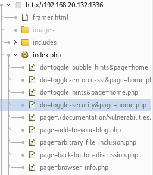

En el apartado de Target encontramos los directorios y archivos de la aplicación web que hemos interceptado.

Todos estos apartados los descubre de forma automática y si están marcados en negro significa que han sido visitados.
Todo esto lo ha sacado del código fuente que recibe del servidor.
cuando recibe esa petición desde el servidor con la página web parsea la petición, coge todos los enlaces que puedan hacer referencia a otros apartados dentro de esa aplicación web y te los muestra aquí.
Este spidering es pasivo.
Se puede realizar un spidering activo con BurpSuite pero en la versión de pago o en la comunity v1.x
También podemos utilizar otras herramientas como SkipFish.
skipfish -YO -o Desktop/fish http://192.168.20.132:1336/index.php
Esta sería la primera fase que realizaríamos en el proceso de explotación de vulnerabilidades en aplicaciones web, y es simplemente la fase de tratar de recopilar todos los apartados de esa página web para ver cuáles pueden ser los interesantes.